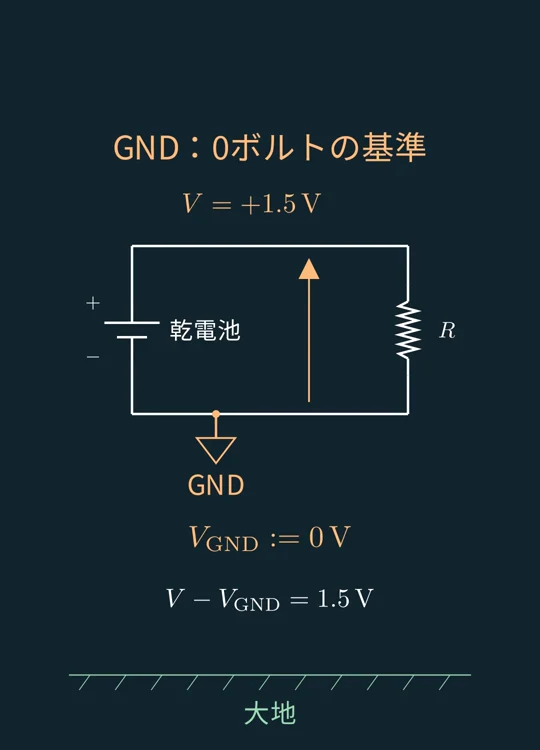
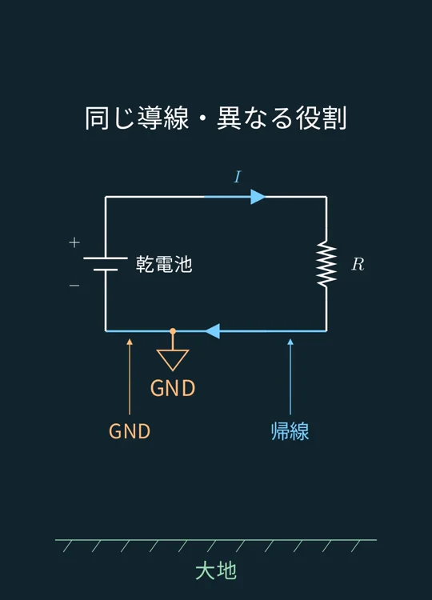
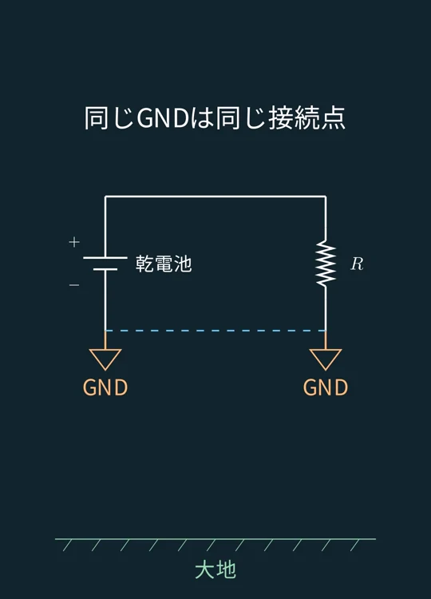
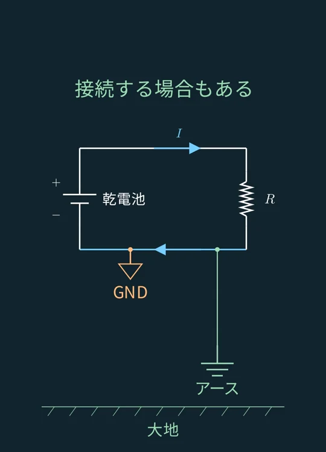
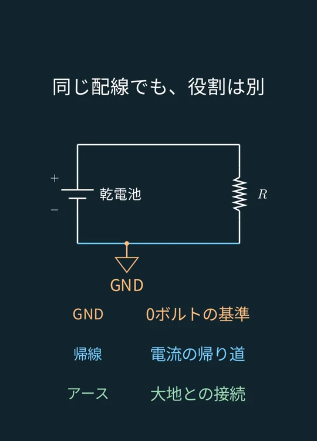

VIDEO 03 / GND・帰線・アース
GNDは本当に地球につながっているのか？
GNDは0ボルトの基準、帰線は電流の帰り道、アースは大地との接続。同じ配線を使うことがあっても、役割は別です。
動画で見る
画像で、ざっくり振り返る
動画の順番に沿って、ポイントをまとめました。
STEP 01
GNDがあっても、大地とはつながっていない
乾電池と抵抗だけで閉じた回路にも、GNDを定義できます。この回路は、大地につながっていません。

場面 1 · 画像を選ぶと拡大 STEP 02
GNDは、0ボルトの基準
電位は相対的なので、基準となる点を選べます。この例では電池のマイナス端子を0 Vと決め、プラス端子の電位をそこから＋1.5 Vと表しています。

場面 2 · 画像を選ぶと拡大 STEP 03
帰線は、電流の帰り道
帰線は電流が電源へ戻る経路です。この回路の下側の導線は、電圧の基準と電流の帰り道を兼ねています。同じ場所でも、意味は異なります。

場面 3 · 画像を選ぶと拡大 STEP 04
帰線を省略し、GNDで表すことも
帰りの導線を描かず、GND記号で接続を示す回路図もあります。同じGND記号の点同士は、電気的につながるという意味です。大地への接続を示しているとは限りません。

場面 4 · 画像を選ぶと拡大 STEP 05
アースは、大地との接続
アースは実際の大地との電気的な接続です。必要な回路ではGNDをアースにつなぐこともありますが、GND記号だけで大地につながっているとは判断できません。

場面 5 · 画像を選ぶと拡大 STEP 06
同じ配線でも、3つの役割は別
GNDは0ボルトの基準、帰線は電流の帰り道、アースは大地との接続。この3つが同じ配線を使っていても、それぞれの役割を区別して考えます。

場面 6 · 画像を選ぶと拡大